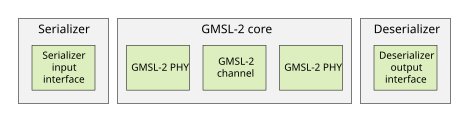
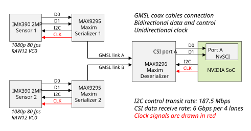
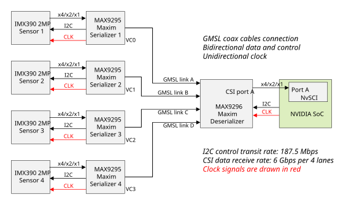
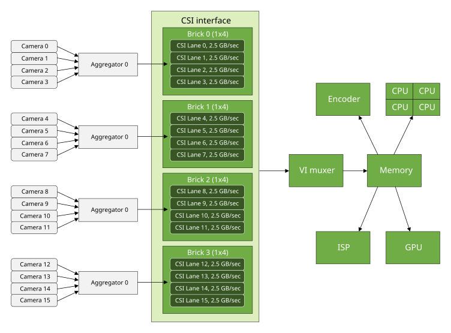
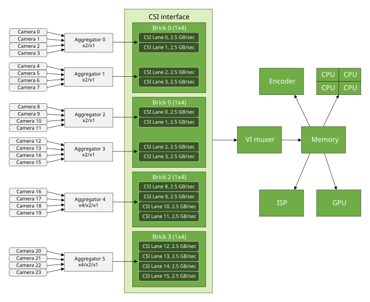
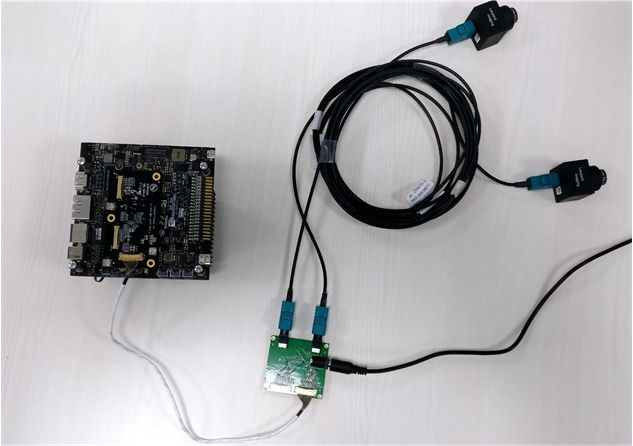
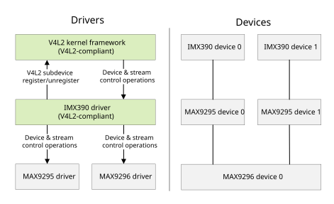
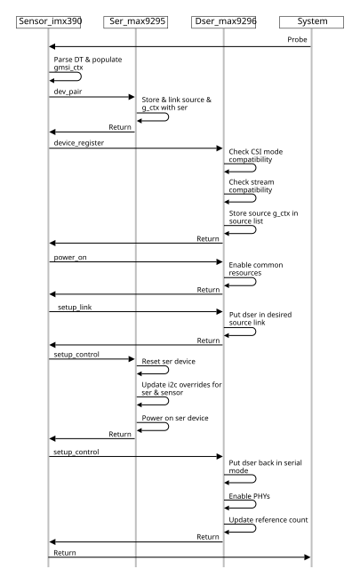
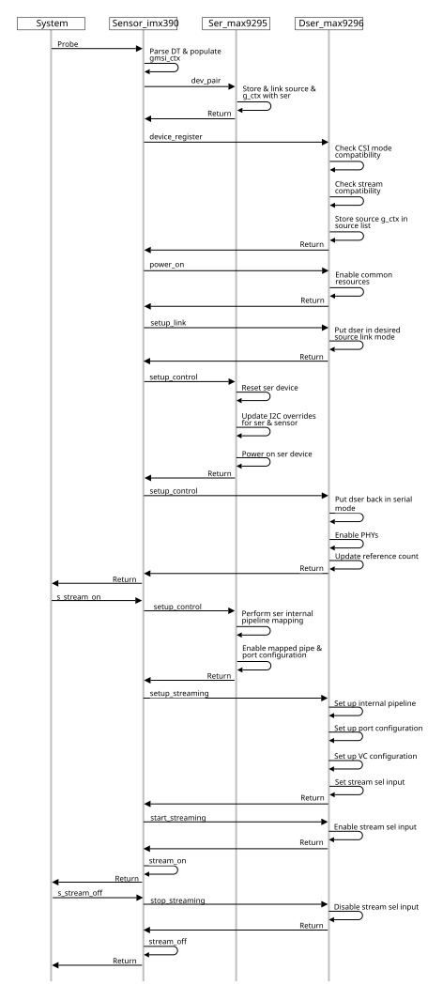

Jetson Virtual Channel with GMSL Camera Framework#
Applies to: Jetson AGX Orin series
This topic contains details about:
The Gigabit Multimedia Serial Link (GMSL) protocol
Hardware connectivity for the serializer/deserializer in the reference module (see Reference Setup)
The software framework
Configuration, including virtual channel programming
NVIDIA validates the reference module on NVIDIA® Jetson AGX Orin™ series devices with Sony IMX390 sensors as source. However, the reference module can be used as a starting point for bringing up another GMSL module on Jetson AGX Orin series.
The software framework described in this document can be used as reference for developing SerDes (Serializer-Deserializer) links other than GMSL.
Note
The reference GMSL module described here uses the CSI interface. No other interface is validated.
Reference Setup#
The reference GMSL setup is:
Sensor: Sony dual IMX390, RAW12/1080p/30fps, CSI port A, x2 lanes
Serializer: Maxim MAX9295
Deserializer: Maxim MAX9296
GMSL Protocol#
Maxim Integrated supports GMSL as a communication link for video applications in the automotive industry. GMSL is based on SerDes (Serializer-Deserializer) technology; that is, it uses a serializer on the transmitting side and a deserializer on the receiving side. The following diagram shows the high-level architecture of GMSL.

GMSL is specifically designed for use in Advanced Driver Assistance Systems (ADAS) and Camera Monitoring Systems (CMS). It can provide video transfer speeds up to 6 GB/second. It uses STP or coaxial cable, which are both inexpensive and very robust for EMC disturbances.
GMSL Camera#
The following diagram shows the control, data, and clock connections for the reference GMSL module validated on Jetson AGX Orin series.

In this GMSL setup, two sensors are paired with their respective serializers, each streaming 1080p/30fps RAW12 pixels over x2 CSI MIPI lanes.
The serializers are connected to a GMSL deserializer device through different GMLS ports (ports A and B) and GMSL links using coaxial cables.
On the output port side, the deserializer is connected to a Jetson AGX Orin SoC on the desired CSI port (port A in this example).
To transmit two different pixel streams from two sensors to a receiver at a shared CSI port, the deserializer assigns a unique virtual channel ID to each stream. The virtual channel ID is software-configurable via the device tree. It must match the stream’s virtual channel ID programmed on the receiver side in the NVIDIA SoC.
This reference GMSL setup uses a 2x (x2/x4/x1) CSI deserializer. It can host up to two sensors via serializers.
To host four sensors over single shared CSI port you must use a 4x aggregator, as shown in the following diagram:

CSI Connectivity#
The table below shows the maximum number of sensor connections supported on each type NVIDIA® Jetson™ device.
Maximum connections supported |
||||
|---|---|---|---|---|
Configuration |
Jetson AGX Orin |
Jetson Orin NX series |
Jetson AGX Orin series |
|
No aggregator |
6 |
|||
Aggregator with ISP |
16 |
|||
Aggregator without ISP |
24 |
|||
Jetson AGX Orin#
Jetson Orin NX Series#
Jetson AGX Orin Series#
Jetson AGX Orin series supports a maximum of 16 virtual channels with ISP, or 24 virtual channels without ISP.

The diagram above shows sensor connections to each of the NVIDIA® Orin™ CSI bricks (a total of 4 CSI bricks) in x4 or /x2 or /x1 possible lane configuration.

The diagram above shows four sensors connected to each port of CSI bricks AB and CD in x2 or x1 lane configuration, and four sensors connected to each of the remaining CSI bricks EF and GH in x4, x2, or x1 lane configuration.
The CSI aggregator uses virtual channels to connect to four cameras over one CSI connection.
The Jetson AGX Orin VI muxer sends each camera frame to a different location in memory.
In software, each camera appears as a separate V4L2 device.
Hardware Module Connectivity#
The figure below shows how two sensors are connected to a Jetson AGX Orin device using a GMSL reference module and a MAX9295/MAX9296 SerDes.
The GMSL MAX9296 deserializer is connected to a Jetson device via a MIPI adapter and MIPI white cables, which are plugged into the device’s camera connector socket. This is one of several ways the aggregator hardware module can be connected to the device.

Software Framework and Programming#
This section describes the kernel drivers and device tree programming required for GMSL and virtual channel.
The following diagram shows the high-level architecture of the kernel drivers and devices.

Driver Framework#
As shown in the diagram above, there are separate kernel drivers for serializer and deserializer devices, apart from the sensor driver. In the reference module they are the MAX9295 serializer and MAX9296 deserializer drivers.
In this framework, the sensor driver is exposed to the rest of the system as would be any other generic V4L2 sensor driver without external aggregator. All of the SerDes programming happens “under the hood” through the sensor driver.
The SerDes kernel drivers are not registered as client programmable and isolated devices V4L2 or any other sensor framework.
The reason for this design is that a certain fixed sequence of operations must be performed in the SerDes, and it does not quite fit the generic V4L2 framework sequence for sensors.
SerDes drivers are separate, though. They can be statically linked to any sensors in the device tree, depending on hardware connectivity, but they are controlled by the sensor driver only. They do not expose any programmable functionality directly to user clients.
A sensor driver internally links to the SerDes drivers to perform device and stream control operations such as power on/off, control setup/release, stream setup/release, and stream start/stop, based on device tree configuration.
Driver Programming#
The serializer/deserializer drivers control the serializer/deserializer modules through the serializer/deserializer API, described in Jetson Linux Drive Package API Reference.
The structure gmsl_link_ctx is the core entity which defines the entire link configuration from sensor to serializer link to deserializer link for each sensor source. It is documented in the
API Reference.
Most of the structure fields are populated by the sensor driver from the sensor’s gmsl-link node in the device tree during device boot. (See Module Device Tree for node details.) Some of the fields are populated by the serializer and deserializer drivers.
The sensor driver populates an instance of the structure and passes it to the serializer and deserializer drivers, which make use of the configuration details found in the structure context during power-on, control pipeline setup, and data streaming pipeline setup calls.
As defined in this structure, the sensor and its corresponding serializer device each have a physical I2C slave address, assigned according to the device data sheet, and a proxy I2C slave address, which is user-defined.
The reason for this is that all of the devices sharing the same hardware connection in the GMSL setup must be identified to the I2C bus with unique physical I2C slave addresses. The physical I2C slave address of each device is fixed, and is the same for similar types of devices, such as all sensor devices of a single make and model that are assigned to same slave. This causes address conflicts. To resolve the conflicts the driver uses a different proxy I2C slave address for each such device. The proxy I2C slave addresses are set statically in the device tree, and are assigned during device boot.
The following diagram shows the call flow among the GMSL kernel drivers during device boot.

Power management is handled by the shared deserializer driver instead of the sensor driver because each sensor device’s driver is unaware of other sensor devices in the GMSL module setup, but the deserializer device is common among all of the sensors connected to it.
The stream-on and stream-off calls are mapped directly to the serializer and deserializer drivers.
Stream setup is required for both SerDes drivers, whereas stream-on and stream-off are controlled by the deserializer driver only.
The following figure shows the call flow among the GMSL kernel drivers for a stream-on or stream-off operation.

Device Tree Programming#
The device tree describes the hardware connections to the system as well as the static device properties of the drivers.
Platform Device Tree#
Hardware connections and device addressing are configured in the platform device tree.
As explained in Driver Programming, each sensor and serializer device has two addresses: a physical I2C slave address and a proxy I2C slave address. Both are defined in the platform device tree.
In the reference GMSL module both sensors have the physical I2C slave
address 0x1a, but must be assigned distinct proxy addresses. The proxy
I2C slave addresses are user-configurable, by default 0x1b and 0x1c.
Similarly, for serializer devices the physical I2C slave address is
0x62, and the proxy I2C slave addresses are user-configurable, by
default 0x40 and 0x60.
The following table shows the I2C slave address assignments for the reference GMSL setup.
I2C Slave Address |
|||||
|---|---|---|---|---|---|
Assignments Sensor1 |
Sensor2 |
Ser1 |
Ser2 |
Des |
|
Physical I2C slave address |
|
|
|
|
|
Proxy I2C slave address |
|
|
|
|
NA |
Each sensor device initiates a power_on request to the deserializer
driver to perform GMSL link configuration and power on the shared
deserializer device. In this power-on call, the deserializer driver only
enables the GMSL link to which the caller’s sensor device is connected,
and keeps other one disabled, so that there will be no address conflict
between the two links. It then updates all devices’ proxy I2C slave
addresses on the active link to the ones defined in the device tree. It
follows the same procedure for the other GMSL link when the deserializer
driver gets a power_on request from the sensor device connected to the
other GMSL link. In this way, the deserializer driver updates all of the
proxy I2C save addresses of all devices hosted by the deserializer
device.
For example, in the reference GMSL setup, when the deserializer gets a
power-on request from the sensor device connected to link A, it enables
GMSL link A and disables GMSL link B. It first communicates to the
serializer and the sensor devices on link A at their respective physical
I2C slave addresses (0x1a for sensor1 and 0x62 for Ser1), and then
updates those physical I2C slave addresses to proxy I2C slave addresses
(0x1b for sensor1 and 0x40 for Ser1). Then it performs the same steps
for GMSL link B when the sensor device on GMSL link B requests power_on
of the deserializer driver. Finally, it sets up the GMSL link in dual
mode. Thus, each device is identified uniquely over the I2C bus. All
further device communication takes place on the proxy I2C slave
addresses until reboot.
The GMSL link addresses are currently programmed at boot time, during probing, due to control configuration timing constraints.
The following code is an example of platform device configuration for the GMSL setup shown in the diagrams above. For full details, see the platform device tree file:
For Jetson AGX Orin series: tegra234-p3737-camera-imx390-overlay.dts:
tca9546@70 { compatible = "nxp,pca9546"; i2c@0 { ... reg = <0>; dser: max9296@48 { /* single common deserializer at 0x48 */ compatible = "nvidia,max9296"; ... }; ser_prim: max9295_prim@62 { /* Default serializer device */ compatible = "nvidia,max9295"; ... }; ser_a: max9295_a@40 { ... }; imx390_a@1b { ... }; }; };
Module Device Tree#
After platform device configuration, the device module configuration must be added to the module device tree. For full details, see:
For Jetson AGX Orin series: tegra234-camera-imx390-a00.dtsi
A few snippets are shown here to illustrate the configuration. The virtual channels are set in the module device tree.
The sensor device acts as controller device in the GMSL software framework, so in the module device tree each sensor device node contains a gmsl-link device node which describes the properties of the GMSL link to which the sensor is connected. In the example below, the gmsl-link node describes the sensor connected at GMSL link A:
gmsl-link {
src-csi-port = "b"; /* Port at which sensor is connected to
its serializer device. */
dst-csi-port = "a"; /* Destination CSI port on the Jetson side, connected at
deserializer. */
serdes-csi-link = "a"; /* GMSL link sensor/serializer connected to sensor CSI node. */
csi-mode = "1x4";
st-vc = <0>; /* Sensor source default VC ID: 0 unless overridden by
sensor. */
vc-id = <0>; /* Destination VC ID, assigned to sensor stream by
deserializer. */
num-lanes = <2>; /* Number of CSI lanes used. */
streams = "ued-u1", "raw12";
/* Types of streams sensor is streaming. */
};
For any GMSL module configuration, all the fields shown above must be set based on the hardware connectivity.
Virtual Channel Programming in the Module Device Tree#
You must add the same vc-id property value to the respective CSI and VI
channel nodes in the same module device tree file. This property is used
for V4L2 camera use cases.
You must set the vc-id property in the gmsl-link node for each sensor to
match the vc_id property in the sensor mode device node.
The vc_id property in sensor mode device tree nodes is used for use
cases based on the ARGUS camera. For example:
mode0 { /* Mode IMX390_MODE_1920X1080_CROP_30 FPS. */
mclk_khz = "24000";
num_lanes = "2";
tegra_sinterface = "serial_a";
vc_id = "0";
. . .
}.
VI and CSI Channel Nodes in the Module Device Tree#
The module device tree for the reference GMSL setup also performs the port binding to VI and CSI. The number of VI and CSI channels is 2, as in any other dual-sensor setup, but the port-index field would be set based on the hardware connectivity:
tegra-capture-vi {
num-channels = <2>;
ports {
...
};
port@1 {
reg = <1>;
imx390_vi_in1: endpoint {
...
};
};
};
};
bus@0{
host1x@13e00000 {
nvcsi@15a00000 {
num-channels = <2>;
#address-cells = <1>;
#size-cells = <0>;
channel@0 {
reg = <0>;
ports {
...
};
};
...
};
};
};
In this configuration the port-index property is set to 0 for both the VI channel 0 and channel 1 nodes, so that both sensors use VI stream 0.
For CSI channel 0 and channel 1 nodes too the port-index property is set to 0, meaning that both channels’ sensors are connected to CSI port A.
The VI and CSI channel nodes also both contain a new property, vc-id,
used in V4L2 camera use cases as mentioned above. It must match the
gmsl-link device node’s vc-id property.
The bus-width property specifies the number of CSI lanes used.
tegra-camera-platform node configuration in module device tree#
The tegra-camera-platform device node specifies details of the sensor
modules’ configuration. The configuration below is for the reference GMSL module:
tegra-camera-platform {
compatible = "nvidia, tegra-camera-platform";
num_csi_lanes = <2>;
max_lane_speed = <4000000>;
min_bits_per_pixel = <10>;
vi_peak_byte_per_pixel = <2>;
vi_bw_margin_pct = <25>;
isp_peak_byte_per_pixel = <5>;
isp_bw_margin_pct = <25>;
modules {
module0 {
badge = "imx390_rear";
position = "rear";
orientation = "1";
drivernode0 {
/* Declare PCL support driver (classically known as guid) */
pcl_id = "v4l2_sensor";
/* Declare the device-tree hierarchy to driver instance */
sysfs-device-tree = "/sys/firmware/devicetree/base/bus@0/i2c@3180000/tca9546@70/i2c@0/imx390_a@1b";
};
};
module1 {
badge = "imx390_front";
position = "front";
orientation = "1";
drivernode0 {
/* Declare PCL support driver (classically known as guid) */
pcl_id = "v4l2_sensor";
/* Declare the device-tree hierarchy to driver instance */
sysfs-device-tree = "/sys/firmware/devicetree/base/bus@0/i2c@3180000/tca9546@70/i2c@0/imx390_b@1c";
};
};
};
};
num_csi_lanesis set to 2, since both sensors are connected to a single CSI port A in x2 lane fashion. This is unlike other dual sensors, wherenum_csi_lanesis set to the total number of CSI lanes used by both sensors, since they use different CSI ports.max_lane_speedis set to an appropriate value for two sensors streaming through a single shared port.The sensor device nodes are defined using sensor proxy I2C slave addresses instead of their physical I2C slave address, and their paths are set in sysfs-device-tree property. Similar naming is used for the devname property.
For the rest of the configuration, follow the same guidelines as for other sensors.
Refer to the following module device tree files:
For Jetson AGX Orin series:
tegra234-camera-imx390-a00.dtsi
Device Tree Overlay#
The device tree overlay additions is same as for any other sensor module.
For reference GMSL setup support, see the node
fragment-imx390@0 in:
For Jetson AGX Orin series:
tegra234-p3737-camera-modules.dtsi
Camera Modules Device Tree#
All the device nodes in the I2C node of the platform’s camera module
device tree are defined in the same way as in the platform device tree.
As in the reference GMSL setup, they all go to i2c@0.
The camera module device tree is:
For Jetson AGX Orin series: tegra234-p3737-camera-modules.dtsi
Note
The vc-id property is set to 0 by default for all VI ports in all modules’ device tree files. You must assign correct values to this property in camera-modules.dtsi and the sensor-specific module device tree file.
Constraints#
Sensor streams connected to same CSI aggregator and sharing a CSI port must use the same lane configuration. The deserializer driver fails to register a stream if its lane configuration does not match other streams that share the same deserializer device.
Apart from that, CSI aggregators generally support multiple identical cameras running with the same frame rate and sensor mode. Review your aggregator data sheet for additional restrictions if you are using a more complicated configuration.
Validation#
Dual GMSL sensor streaming (preview/capture) is validated using Argus cameras, sharing CSI port A, and the V4L2 application.
The 2x CSI deserializer/aggregator is validated. The 4x CSI aggregator is not validated, as its hardware module is currently not available.
Note
The MIPI CPHY interface has been validated up to 2.5 GSPS per trio.
Known Issues#
This section summarizes known issues in the GMSL camera framework.
General Issues#
Preview flickers on scene change.
Sensor tuning and image quality are substandard.